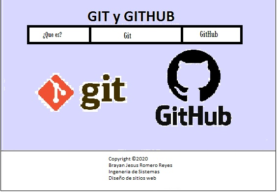

GIT y GITHUB
Git es un sistema de control de versiones distribuido; esto quiere decir que mantiene una copia local del
repositorio completo y es el mejor sistema de control de versiones del mundo.
GitHub es un sitio web y un servicio en la nube que ayuda a los desarrolladores a almacenar y
administrar su código, al igual que llevar un registro y control de cualquier cambio sobre este código.
Objetivo del sitio
- General: Conocer la importancia de Git + Github y sus diferencias
- Objetivo específico 1: Aprender y mejorar los conocimientos sobre los comandos git sin parámetros
- Objetivo específico 2: Conocer el software como un hosting free repositorio remoto GitHub
- Objetivo específico 3: Identificar para que sirven y como utilizar GitHub con Html
Materiales a utilizar
Vinculos:
- https://blog.makeitreal.camp/git-y-github/
- https://kinsta.com/es/base-de-conocimiento/git-vs-github/
Imagenes:
-
https://www.google.com/search?q=GIT+y+GITHUB&sxsrf=ALeKk01zEQQMGfPKfVzopZ-FfqrOAe9siw:1601433700084&source=lnms&tbm=isch&sa=X&ved=2ahUKEwjEi8y27Y_sAhXCtVkKHe76DHcQ_AUoAXoECAwQAw&biw=1366&bih=657
Videos:
-
https://www.youtube.com/watch?v=ggD808TwCvU
Contenido
Bienvenido a este espacio del curso de diseño de sitios web, en esta página encontrara la explicación de Git y GitHub
Maquetación
